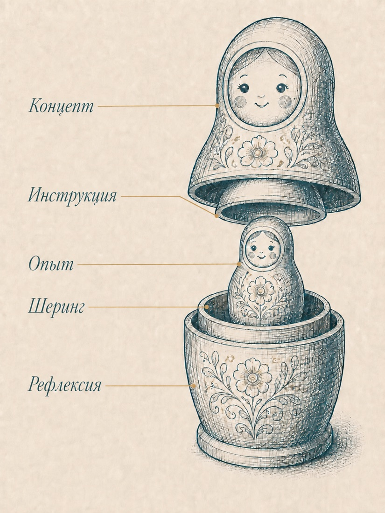
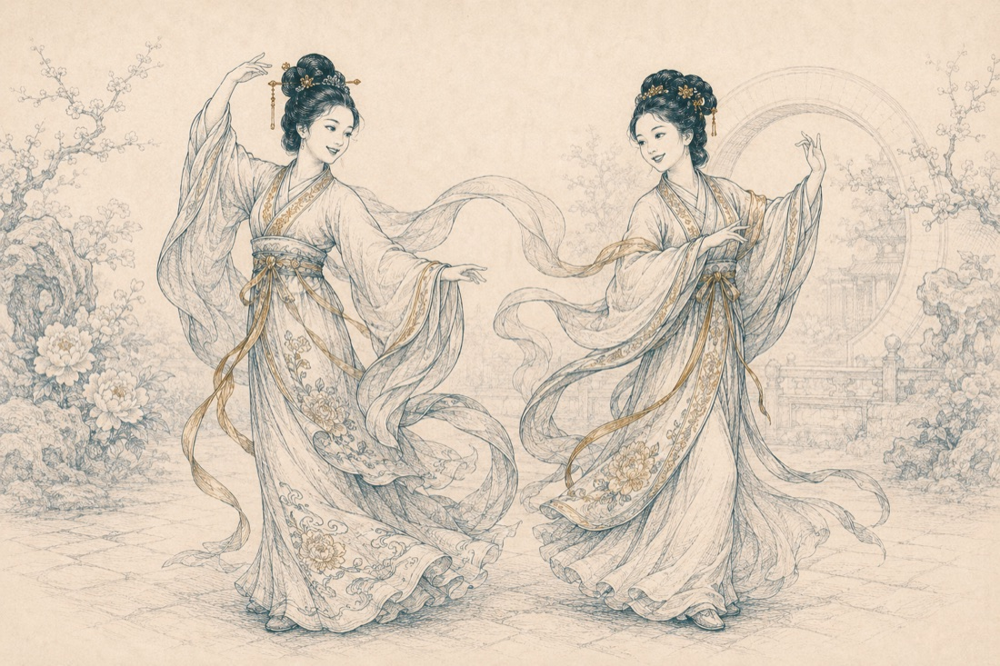
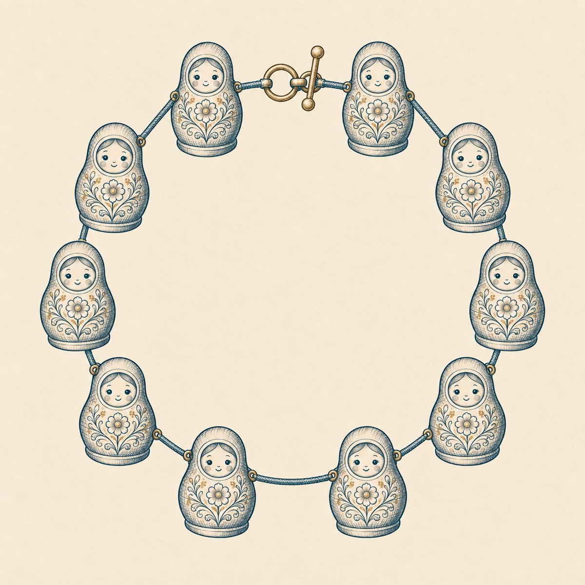
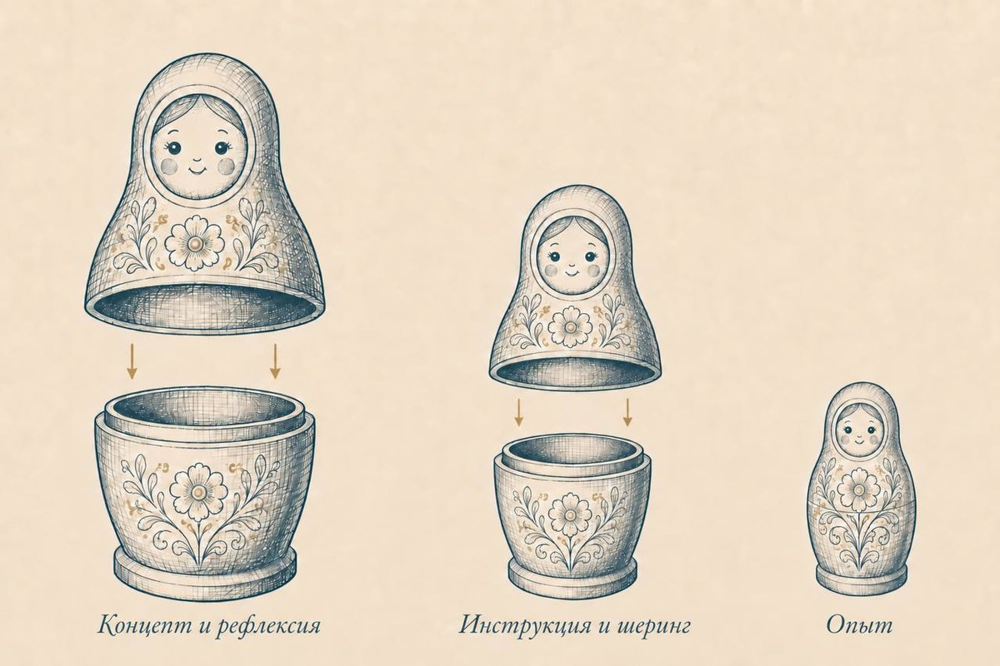
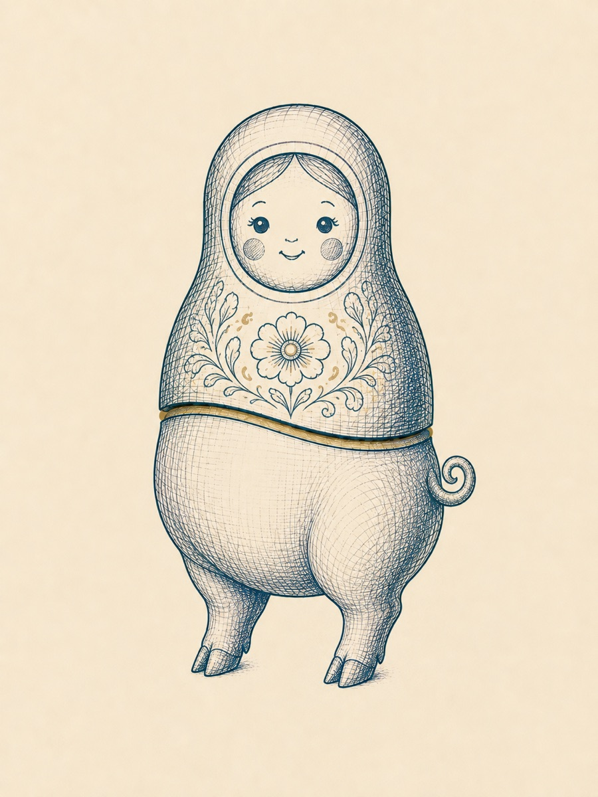

Ну что ж, добро пожаловать, друг мой, в третью главу. Мы продолжаем разбираться в тонкостях структурирования обучающего процесса. Если ты помнишь, мы начали с макроуровня, с самых общих вопросов: кого учим, чему учим, что такое цели и результаты. Дальше выяснили, как именно выстраивать логику обучения и что такое концепт программы и как его конструировать, используя трёхпозиционную модель описания.
Собранный концепт, уложенный в «лестницу навыков» с прописанными TOTE для каждой ступени – это уже мезоуровень (средняя степень детализации). И вот теперь мы готовы спуститься на уровень микроструктуры и ответить на очень важный и тонкий вопрос: окей, мы столько раз говорили о том, что программа обучения должна приводить к появлению навыка у наших студентов.
Отлично, КАК ИМЕННО мы будем это делать? Ну, технически, как будет устроена процедура нашего взаимодействия со студентами, чтобы они по-настоящему, шаг за шагом приобретали и закрепляли навыки, за которыми пришли учиться?
Ух, какой волнительный момент! Я хочу познакомить тебя с моделью, которая изменила мою тренерскую жизнь на «до» и «после», а сегодня я не могу себе представить, что бы я делал, не будь её в моём распоряжении. Она фантастически изящна, многогранна и позволяет добиваться ровно того эффекта, который вынесен в заглавие этой книги: с ней наши программы становятся управляемыми и предсказуемыми.
Итак, знакомься: модель под названием «Матрёшка»1.
Давай для начала вспомним, как выглядит знаменитая русская кукла в разрезе: одна фигурка, внутри неё вторая, внутри — третья… Вспомнил? Отлично, держи в голове эту конструкцию, чтобы в дальнейшем быстрее понять, как она работает на практике. Наша «матрёшка» имеет пять элементов, и я сразу назову их по именам: концепт, инструкция, опыт, шеринг и рефлексия.
Определение
Матрёшка — это микромодель обучения, которая позволяет каждый шаг концепта превратить в единицу навыка.

Ровно эта модель отвечает за то, чтобы «экспертный контент» из твоей головы последовательно превращался в навыки твоих студентов. Она же, матрёшка, нам необходима затем, чтобы открывать и закрывать каждый TOTE на каждой ступени «лестницы навыков».
1 Впервые я узнал об этой модели от Татьяны Мужицкой, она в свою очередь поведала, что получила её из рук бизнес-психолога и тренера Бориса Мастерова, а дальше следы теряются…
02
Устройство и функционал элементов
✦
Сначала коротко про устройство и функционал каждого из элементов «матрёшки»2.
Элемент 1
Концептуальная часть
Это ровно та ступень концепта, тот этап истории, которую мы рассказываем нашим студентам. Здесь может быть тема или одна из тем конкретного урока/вебинара. Здесь находится теоретическое обоснование и смысловое наполнение того, чем мы будем дальше заниматься: о чём мы говорим, для чего нам это, как тема связана с предыдущими и следующими, какой теоретический минимум нам необходимо освоить?
Элемент 2
Инструкция
Переход от теории к практике невозможен без внятной инструкции: что именно мы предлагаем студенту попробовать, в каком формате, в течение какого времени, каким именно способом. Навык давать чёткие инструкции достоин отдельного обстоятельного разговора, и он у нас впереди. Пока же ограничимся тем, что скажем: инструкция должна непосредственно вытекать из концептуальной части и вести к практическому опыту, который непосредственно связан с отработкой того, что обсуждалось в концептуальной части.
Например: если концепт у нас посвящён рецепту приготовления кофе в турке, то инструкция должна соответствовать упражнению, в котором ученик сможет применить на практике полученный рецепт.
Элемент 3
Опыт
Сердцевина модели: ученик выполняет некоторое упражнение, получает практический опыт, соответствующий теме «матрёшки».
И вот здесь наступает важный момент. Есть теория, есть инструкция, есть практика. Чего ж вам боле? Мы можем сказать ученику: «Друг мой, чтобы научиться плавать, надо плавать, поэтому вот тебе инструкция – дальше сам, бассейн за углом». Или: «Хочешь научиться играть на скрипке? Вот смычок, вот так его держать, вот так извлекать звук – понял? Отлично, иди тренируйся». Возможно, ты даже встречал наставников и учителей, которые действовали именно так.
Что не так с подобным подходом? В нём не хватает ещё двух важнейших элементов, без которых цикл обучения не может считаться завершённым. И пока он не завершён, мы понятия не имеем – чему там научился или нет наш подопечный, а значит ни о какой предсказуемости и управляемости образовательного процесса речи быть не может.
2 Подробный разбор этих элементов тебя ждёт в следующих главах. Пока – коротко, в общих чертах.
03
Итак, вот они, ещё два важнейших элемента «матрёшки».
Элемент 4
Шеринг
Слово образовано от английского share, «делиться». Смысл шеринга в том, чтобы ученик вербализовал полученный опыт, поделился своими переживаниями и наблюдениями от процесса. Именно на этом шаге мы, как тренеры/наставники можем выяснить, что же происходило в голове ученика во время упражнения: что ему давалось легко, а что сложно, с чем он справился успешно, а где растерялся, как он принимал решения, что из теоретической части запомнил, а что потерял и так далее.
Элемент 5
Рефлексия
И, наконец, финальный элемент «матрёшки» — рефлексия, осмысление. Весь полученный и озвученный опыт важно разложить по полочкам и структурировать: что это было, чему мы здесь научились, применим ли полученный опыт к жизненной практике, где и как мы будем в дальнейшем его использовать, какие ещё выводы для себя можем сделать и т.д.
04
Несколько слов о важности шеринга и рефлексии
✦
Несколько слов о важности шеринга и рефлексии в обучении: зачастую опыт, как таковой — штука непрочная: он может быстро выветриваться из сознания и памяти. Особенно, если этот опыт мы не «обвели», образно говоря, зелёным маркером в своём собственном сознании. Чтоб мне не быть голословным – давай приведу характерный пример:
Характерный пример
Возможно, ты проходил в своей жизни различные тренинги и семинары личностного роста, где тебе давали много разных упражнений (это могли быть игры, телесные практики, актёрские упражнения и т.д.). Ты их делал, с тобой в процессе наверняка что-то происходило, возможно, ты переживал довольно необычные для себя состояния. Но вот практика заканчивалась, а за ней и семинар – и вот ты шёл домой жить свою жизнь. Проходил день, другой, пятый — и уже через неделю ты с большим трудом мог вспомнить, что за опыт на том семинаре ты получил, о чём он был, для чего, а главное – что тебе с ним теперь делать. Всё прошло, как с белых яблонь дым. Знакомая история?
Вот и объяснение – для чего нужны шеринг и рефлексия даже после очень интенсивных и глубоких практик. Для того, чтобы закрепить для ума и памяти: «Вот что я прожил и вот, что я получил. Вот, почему это для меня важно. Вот, что я буду с этим дальше делать»3.
И ещё одно соображение – на этот раз о том, как шеринг и рефлексия влияют на управляемость и предсказуемость обучения: голова взрослого человека так устроена, что выносить суждения и делать выводы относительно любых событий жизни мы умеем очень хорошо. Часто эти суждения выносятся почти автоматически, полубессознательно: «Это ерунда!», «Так не бывает», «Это не работает» и т.д. Обучая взрослых людей, нам очень полезно иметь ввиду, что они (наши ученики) непременно сделают какие-то собственные выводы по поводу любых упражнений на нашем курсе.
Проблема в том, что эти выводы будут какие-то. Мы ничего о них не узнаем до тех пор, пока
а) не спросим;
б) пока не направим этот процесс в нужное нам русло.
Именно поэтому, вопреки мнению некоторых экспертов, шеринг и рефлексия внутри программы нужны, в первую и главную очередь, не группе, а нам самим – чтобы хоть немного понимать, что вообще происходит в головах студентов, и при необходимости влиять на это.
3 Здесь мы должны иметь ввиду, что даже качественные шеринг и рефлексия не гарантируют нам, что ученик через время не вытеснит и не обесценит то, что получил во время тренинга. Защитные механизмы психики устроены интересным образом: порой человек склонен удалять из памяти даже очень значимый для себя, трансформирующий опыт и возвращаться на собственные привычные рельсы. Но без шеринга и рефлексии это произойдёт с гораздо бОльшей вероятностью.
05
Матрёшка в действии: учим завязывать шнурки
✦
Впереди у нас ещё несколько глав, в течение которых мы будем очень внимательно и подробно разбирать составные части «матрёшки», а пока, я чувствую, будет полезно переключиться и рассмотреть на очень простом примере, как эта модель показывает себя в действии. Итак, вот мы учим человека завязывать шнурки, используя «матрёшку»:
Концепт
Дорогой мой друг, уметь завязывать шнурки самостоятельно — полезно и важно, потому что благодаря этому навыку мы становимся более независимыми: мы получаем возможность самостоятельно распоряжаться своим гардеробом, самостоятельно выбирать, в чём и когда выходить из дома и, в конце концов, чувствуем себя уверенно и самодостаточно, потому что можем сами о себе позаботиться и завязать шнурки без посторонней помощи. Ниже тебя ждёт простая и универсальная инструкция, которая работает абсолютно с любой парой обуви на шнурках.
Инструкция
Итак, возьми ботинок или кроссовок, левый или правый – значения не имеет. Проверь, чтобы оба свободных конца шнурка были одинаковой длины. Надень обувь на ногу, далее следуй изображениям на иллюстрациях (или посмотри видео, ссылка вот). В конце у тебя должен получиться вот такой красивый бантик. Проделай всё это прямо сейчас.
Опыт
Студент по заданной инструкции совершает все перечисленные действия — в финале у него успешно получается узелок.
Шеринг
Мы задаём ученику, например, такие вопросы: «Ну расскажи, как у тебя проходил этот процесс? Было ли это сложно?» «Насколько понятной для тебя была инструкция?» «На каком шаге тебе было сложнее всего?» «А на каком проще?» «Были ли неприятные эмоции, когда не получалось?» «Как ты действовал в этот момент?»
И мы можем получить, например, такой ответ: «Слушай, вначале я прямо напрягся, даже страшно стало — а вдруг не справлюсь? Но потом решил идти по инструкции, просто повторил всё, что ты рассказал — и получилось. И мне сейчас очень радостно, что получилось с первого раза».
Рефлексия
И получив такие ответы, мы можем перейти к рефлексии и задать следующий вопрос: «А скажи, полезен ли тебе этот навык? Сможешь ли ты им пользоваться теперь самостоятельно? Насколько более уверенно и независимо ты себя теперь ощущаешь?» И, допустим, ученик отвечает: «Ну конечно, ещё бы. Раньше жена помогала мне шнурки завязывать, а теперь я чувствую я могу сам и это действительно добавляет мне уверенности». Точка.
06
Вот мы разложили по «матрёшке» освоение простого навыка. И если мы корректно её сконструировали, то в момент рефлексии человек действительно говорит: «Да, мне это пригодится, я буду этим пользоваться, мне это помогает чувствовать себя более уверенным» — и это означает для нас, что «матрёшка» «закрылась»: этот навык сформировался на базовом уровне. Что значит «закрылась»? Это значит, что концепт, который мы заложили, совпал с выводами студента: то, чего мы хотели достичь на этапе проектирования программы совпало с тем, что получилось по её итогу.
Это очень важный момент. Про корректное «открытие» и «закрытие» «матрёшек» мы тоже обязательно поговорим более подробно в следующих главах, а пока – небольшой комментарий для особо дотошных и требовательных.
Нужно ли закреплять навык, который вот только-только родился у нас на глазах в рамках одной матрёшки и одной итерации опыта? Конечно, нужно. Можем ли мы сейчас сказать, что на данном этапе он ещё очень непрочный и неустойчивый? Безусловно, всё так и есть.
Чтобы сформировать прочное умение, при котором наш ученик с завязанными глазами, сонный, пьяный, при температуре 38 сможет на автомате завязать себе шнурки — понадобится какое-то количество повторений и практики в его собственной жизни: не только кроссовки, но и кеды, не только кеды, но и ботинки, и разные шнурки, и разные обстоятельства. Но базово мы можем быть спокойны: если мы так организовали обучающий процесс, что человек получил успешный опыт и зафиксировал его для себя, то в дальнейшем он скорее всего сможет укреплять его уже самостоятельно, без нашей помощи4.
4 Ещё раз сделаю эту оговорку: мы не всесильные боги и не супергерои, мы не даём гарантий и не влияем на независимую волю другого взрослого человека. В конечном итоге – это его свободный выбор, применять то, чему он уже научился или нет. Почему человек может отказываться от применения уже полученного на курсе навыка – отличный и очень глубокий вопрос. Но сейчас разговор не об этом. Разговор о том, как мы можем создать максимум зависящих от нас условий, чтобы человеку было легко пользоваться за пределами нашего курса тем, чему мы его научили.
07
Как «матрёшка» стыкуется с «лестницей навыков»
✦
А теперь хитрый момент. У меня есть предположение, что ты уже начинаешь сопоставлять в голове нынешний разговор с предыдущими темами и, наверное, у тебя возникает вопрос: секундочку, а как «матрёшка» стыкуется с «лестницей навыков»? Мы же помним: внутри каждой ступени «лестницы» у нас ТОТЕ. И вот ум начинает заходить за разум: а как связаны «матрёшка» и ТОТЕ? Они помогают друг другу, мешают, дополняют? Давай разберёмся.
Напомню, ТОТЕ (T — test 1, O — operation, T — test 2, E — exit) — это модель, которая описывает внутреннюю механику обучения в нашем мозгу. Когда я учусь чему-то новому, мне нужно сначала осознать, в какой точке я нахожусь, потом совершить действие, потом сравнить то, что получилось, с тем, что было в начале, подвести итоги — и перейти или не перейти на следующий цикл. ТОТЕ описывает петлю обратной связи в моём сознании. Но! TOTE не отвечает инструментально и технологически на вопрос: как именно нам, авторам и методологам, организовать процесс встраивания навыка? Какие конкретные шаги совершить, чтобы ТОТЕ в голове у нашего студента «закрылся», и мы могли перевести его на следующую ступень лестницы?
Ещё раз: мы концептуально понимаем, что в рамках каждой ступени «лестницы» ТОТЕ должен как-то открыться и закрыться. Но нам нужен некоторый инструмент, который ответит на вопросы:
как мы подведём студента к практике?
Какая практика здесь нужна?
Что будет после неё?
Как мы поймём, что TOTE закрыт и можно двигаться дальше?
Вот ровно на все эти вопросы нам отвечает «матрёшка».
Зафиксируем
ТОТЕ — описание мыслительных процессов в голове у человека. Абстрактная модель внутренних операций, которые разворачиваются в мозгу учащегося.
«Матрёшка» — это дидактический дизайн: прикладное решение, которое помогает организовать этапы взаимодействия со студентом: в рамках урока, тренинговой сессии, воркшопа, мастер-класса. Когда напротив меня сидит студент, именно «матрёшка» отвечает на вопрос, как именно я буду обеспечивать для него прохождение по циклу TOTE на конкретной данной ступени5.
Ну, как? Вскипели мозги в очередной раз? Понимаю, держись. Я предположу, что у тебя уже возникло немало новых вопросов: почему всё-таки модель называется именно «матрёшкой»? Как соотносится концепт с рефлексией, а инструкция — с шерингом? Как подбирать упражнения, какими они бывают, где их брать? Как собрать «матрёшку» в рамках своего проекта?
Это важные вопросы, и будь уверен – я не брошу тебя без ответов. Следующие главы будут посвящены именно последовательному разбору того, как «матрёшка» организована внутри себя и как ей пользоваться с наибольшим успехом. А пока – небольшая практика, чтобы «приладить к руке» этот новый для тебя инструмент…
5 Эти модели относятся к несколько разным уровням описания процесса обучения: сначала мы можем думать ТОТЕ-ами, чтобы выстроилась ясная «лестница навыка». А когда приходит необходимость «навести резкость» и озадачиться вопросом «как именно в рамках этого урока у человека получится то, что должно получиться» — вот здесь мы и будем вооружаться «матрёшкой».
08
Рабочая тетрадь
Пофантазируй о своей первой матрёшке
1. Нарисуй матрёшку в разрезе: пять вложенных элементов — концепт, инструкция, опыт, шеринг, рефлексия.
2. Посмотри на свою лестницу навыков и в режиме брейнсторма поразмышляй: какой ТОТЕ внутри твоей лестницы ты мог бы разложить на элементы матрёшки?
3. Запиши первые идеи, которые начнут появляться — пока без требований к качеству, просто наброски.
Ответы сохраняются в этом браузере автоматически. Все задания книги собраны в рабочей тетради — её можно открыть отдельно, заполнить целиком и скачать одним PDF.
Отпусти ум в лёгкое творческое парение и просто понаблюдай, как это начнёт укладываться в голове. Если пока не укладывается — ничего страшного: сейчас уложим, последовательно и спокойно, и всё у нас обязательно будет хорошо.
Раздел 15
Концептуальная часть матрёшки
✦ ✦ ✦
01
Легенда о мудром императоре

✦
Продолжаем разговор про «матрёшку». Как я и обещал, в ближайших главах мы будем подробно разбираться с её устройством, и прямо сейчас начнём с верхнего открывающего её элемента – с концепта. Но сначала – древняя и очень поучительная притча о великом китайском императоре и его мудром первом советнике.
Легенда
Много лет каждое утро первый советник являлся к владыке на доклад: сообщал, как идут дела в его бескрайней империи, и предлагал различные решения — как достичь народного блага и процветания страны. И когда визирь был доходчив и убедителен, когда он ясно, чётко и последовательно объяснял, для чего нужны те или иные решения, какую службу они сослужат великому императору и его подданным — владыка Поднебесной внимал благосклонно и чаще всего к советам прислушивался.
Но бывали дни, когда мудрый советник не находил верных слов, чтобы разъяснить, зачем нужны те или иные его предложения, почему они так важны именно сейчас и какой в них толк. И когда такое случалось, из потаённых комнат дворца выбегали две прекрасные дочери императора — китайские принцессы Нахуа и Схуали.
Они начинали исполнять перед лицом отца искусный и прекрасный танец, всячески увлекая взор императора. И танец их был настолько изыскан и великолепен, что мудрейший властелин Поднебесной совершенно переставал слушать своего советника, и тому не оставалось ничего иного, как убраться подобру-поздорову.
Чему нас учит эта древняя притча? Она учит нас, в первую и главную очередь тому, чтобы мы чаще напоминали себе базовые принципы андрагогики! Ведь, если мы заглянем в них прямо сейчас, мы вспомним о том, что взрослым очень важно понимать, чему и зачем они учатся, как обучение связано с решением их реальных, жизненных задач и, что особенно важно, эти ответы (или их отсутствие) будут существенным образом влиять на внутреннюю мотивацию к продолжению учёбы.
Или, переводя на более простой и хулиганский язык, китайские принцессы Нахуа и Схуали живут в голове каждого из нас. И всякий раз, когда нам неясно, зачем предлагается то или иное упражнение/лекция/домашнее задание, почему именно оно, именно сейчас? – эти китайские принцессы начинают свой дивный танец уже перед нашими собственными глазами, мешая погрузиться в образовательный процесс. Я думаю, ты легко можешь вспомнить, как это происходило с тобой на одном из обучений в прошлом (к сожалению, преподаватели и авторы курсов сплошь и рядом делают всё от них зависящее, чтобы призвать на сцену китайских принцесс).
02
Но довольно ерничать, скажешь ты – какой вывод мы должны отсюда извлечь? Вывод очень простой: если мы хотим, чтобы процесс нашего взаимодействия со студентами был управляемым и предсказуемым, мы обязаны на каждой ступени обучения отвечать ученикам на вопросы:
зачем им то, что мы сейчас изучаем?
почему именно сейчас это нужно и важно?
Теперь: причём здесь «матрёшка» и её концептуальная часть? А притом, что ровно в концептуальную часть «матрёшки» мы и будем включать ответы на эти вопросы.
Запомним
В концептуальной части каждой «матрёшки» обязательно должны содержаться ответы на два безмолвных и бессознательных вопроса, которые по умолчанию беспокоят всякого взрослого человека: «Зачем мне это?» и «Почему именно это и именно сейчас?»
Что бывает, когда «зачем» остаётся без ответа
Кажется, что я говорю нечто простое и самоочевидное. И, одновременно с этим, я не могу тебе передать, какое безгранично огромное количество курсов вообще не отвечает студентам на эти вопросы. Как будто студент сам должен догадаться, для чего в этом модуле 6 лекций по 2 часа. Почему здесь такой список литературы именно сейчас? Мне правда жизненно необходимо целиком прочесть все эти шесть книг за неделю? А зачем? Почему нельзя выделить избранные главы или приложить конспекты? И даже если я по ночам буду штудировать эти тома – как это повлияет на мои реальные навыки, задачи, потребности?
Мне кажется, восемь из десяти курсов на современном онлайн-рынке никак не обрабатывают эти безмолвные вопросы. Дескать, мы по каким-то своим причинам посчитали необходимым выложить вот столько материала для самостоятельного изучения, что это за причины – не твоё дело. Ты студент? Ну вот скажи спасибо и грызи гранит молча!
03
Лирическое отступление
✦
Глубоко в недрах традиционной модели обучения заложено полное безразличие к переживаниям, мнению, самочувствию студентов. Почему так? Потому что традиционная модель возникла во времена, когда обучение в школе, а затем (если повезёт!), в университете было одним из немногих социальных лифтов, одним из немногих способов получить необходимую сумму знаний для карьерного, профессионального и статусного роста. Отсюда жёстко иерархический характер отношений между преподавателями и учениками, в котором подразумевалось, что школьник или студент – это ещё только «заготовка человека», только «кусок полена», из которого учёные люди пытаются «выстругать» полноценного Буратино. Прошли годы и столетия, но традиционная модель, сохранившаяся до сих пор во многих школах и вузах, продолжает транслировать если не вслух и прямым текстом, то между строк:
«Мы тебе, неучу дремучему, несём свет знания! Кто ты такой, деревня, чтобы подвергать сомнению наш подход? Хочешь выбиться в люди – будь готов трудиться и трудиться тяжело! Или, вон из наших светлых стен, невежда! Место твоё – на обочине!»
Но, видишь ли, какая штука… Ни школа, ни университет, сегодня в XXI веке не обладают более монополией на знания. Любой из нас может получить доступ к бесконечному потоку информации в 2-3 клика. И, значит, снобизм, высокомерие, безразличие к мнению, чувствам, опыту учеников – это guilty pleasures1, которые современному преподавателю всё сложнее себе позволять. Мне не обязательно слушать скучного лектора, чтобы выяснить различия в философских воззрениях Зенона Китийского и Эпикура – нейросеть удовлетворит моё любопытство в течение 5 минут.
Обучение – это больше не монолог, не однонаправленный поток информации, вливаемый мудрым наставником в голову никчёмному и беспомощному ученику. Современное обучение – это интерактивный процесс; это диалог и коммуникация, в котором мы обязаны уделять внимание состоянию, комфорту, чувствам и мыслям студентов, потому что иначе мы их просто потеряем.
1 Guilty pleasure – постыдное удовольствие.
04
Что будет, если не отвечать на «зачем» и «почему»
✦
Итак, возвращаясь к вопросу о том, почему так важно учитывать роль китайских принцесс Нахуа и Схуали – давай ясно проговорим, что будет, если мы НЕ будем отвечать студентам на вопрос «зачем» и «почему» им наш очередной урок? Мы скорее всего получим такие варианты поведения:
Потеря интереса — человек просто перестаёт проходить курс, закрыл и забыл. Или же – проходит его сугубо формально, без активного участия, просто «ради галочки».
Сопротивление и саботаж в различных формах — возражения, агрессия, беспомощность и т.д.
Когда мы дойдём до разговора о формах сопротивления, о так называемом сложном поведении, станет особенно очевидно: в огромном количестве случаев мы так называемое «сложное поведение» создаём сами — потому что игнорируем наших «китайских принцесс»2.
Теперь взгляни ещё раз на нашу «лестницу навыка»: каждая ступень, как ты помнишь — это ТОТЕ, и значит – каждая ступень будет организована, как «матрёшка». Переходя на очередную ступень концепта, рассказывая студентам историю с ними в главной роли (откуда мы движемся и куда идём) мы обязаны на каждом этапе отвечать: зачем разбираем эту тему, проводим это исследование, отрабатываем эту технологию, читаем эту книгу? И почему именно сейчас?
В каком-то смысле, это прямо-таки задача для тренировки мышления и речевого аппарата: нужно настроить себя таким образом, чтобы всякий раз, когда ты открываешь новую тему на курсе, сама логика мысли и повествования заставляла тебя открывать рот и произносить что-то вроде «В этом модуле нам очень важно освоить X для того, чтобы в дальнейшем у вас успешно получалось Y, и мы это делаем именно сейчас, потому что W…»
2 Пока не буду останавливаться подробно на этой важной теме. Формам сопротивления и технологиям работы с ним у нас будет посвящена отдельная глава.
05
Как это работает на живом материале
✦
Живой пример
Теперь давай разберёмся, как это всё работает на живом материале. Возьмём в качестве примера уже многократно упомянутый курс по самопрезентации. Вот мы дошли со студентами до темы, которая запросто может вызывать сопротивление: мы предлагаем людям записать свою самопрезентацию на видео. Почему сопротивление? Потому что «камера, страшно, никогда этого не делали, и да, понятно, что важно, но будем откладывать до последнего, запишем 2-3 неудачных дубля, плюнем и забудем».
Проходили такое? Конечно, проходили. И, следовательно, нам нужно сделать так, чтобы важность этой задачи в голове студентов перевесила страх.
И говорим: «Итак, друзья, мы успешно перевели текст самопрезентации из письменного в устный, мы уже гораздо лучше представляем, что о себе рассказывать. Следующий важный шаг — записать себя на видео. Зачем нам это нужно? Затем, что возможность посмотреть на себя со стороны даёт шанс заметить огромное количество деталей и нюансов своего поведения, с которыми будет полезно поработать перед тем, как оказаться лицом к лицу с человеком, от которого может зависеть развитие вашей карьеры! Согласитесь, что к таким диалогам необходимо качественно готовиться – так вот, именно видео нашей самопрезентации укажет вам направление дальнейшего развития. Почему это важно сделать именно сейчас? Потому, что мы уже подготовили материал — у нас действительно есть всё, чтобы получить опыт работы с камерой. И тогда, следующим шагом мы сможем изучить результаты первой пробы, дать себе обратную связь и увидеть, с чем работать дальше. Пожалуйста, не нужно делать 356 дублей: отнеситесь к этой первой пробе предельно легко и непринуждённо, насколько возможно – у нас с вами нет задачи сделать «идеально», нам нужен просто рабочий материал, который мы сможем вместе разобрать!»
Вот примерно так может выглядеть концепт матрёшки, открывающей тему записи самопрезентации на видео.
06
Ещё одна модель: бусы
✦
Надеюсь, что этот пример показал тебе, что в целом нет никакой проблемы и сложности в том, чтобы успокаивать «китайских принцесс» в головах студентов. Фактически, главное, что от тебя требуется – это привыкнуть к необходимости всякий раз, упорно и последовательно, отвечать на вопросы «зачем» и «почему» ДО ТОГО, как отправлять студентов выполнять задание.
Поначалу, возможно, ты будешь об этом забывать – это тоже совершенно нормально; в таких случаях в помощь тебе будет чувство, что курс едет как-то на «квадратных колёсах» или же особо активные студенты, возможно, начнут интересоваться, НАХУА ты требуешь от них эту сложную домашку, и в эту секунду, я надеюсь, ты будешь испытывать исключительно чувство благодарности в адрес прекрасных учеников, которые заботливо напоминают тебе про китайских принцесс. :D
…И прежде чем отпустить тебя практиковаться, я покажу тебе ещё одну рабочую модель для конструирования программы курса. Уже, как говорится, для разнообразия и расширения кругозора.

Представь себе бусы или чётки: нить с нанизанными на неё бусинами. Каждая бусина — это, как ты легко можешь догадаться, «матрёшка». М1, М2, М3, М4 и т.д.
Ты можешь даже взять настоящие чётки и начать вслух рассказывать историю своего курса, перебирая бусины. Это отличное упражнение, которое помогает убедиться, что концепт собран действительно качественно: что в нём нет логических нестыковок, что получается связанное, логичное повествование, в котором одна матрёшка перетекает в другую, вторая — в третью, третья — в четвёртую и так далее.
Вот. А теперь – точно к практике.
07
Рабочая тетрадь
Сформулируй концепт одной ступени
1. Возьми любую ступеньку из своей лестницы навыков — совершенно любой микронавык.
2. Письменно сформулируй концептуальную часть так, чтобы из текста было ясно: зачем это нужно и почему именно здесь, именно сейчас. Помни: герой истории — твой студент.
3. Прочитай написанное вслух. Представь, что объясняешь это коллеге или будущему студенту: звучат ли «зачем» и «почему» убедительно? Возникает ли после этих слов желание пойти и попробовать?
4. Если чувствуешь, что не хватает убедительности — спроси себя: чего недостаёт в ответах, что нужно добавить, чтобы действительно захотелось попробовать? Допиши.
5. Отметь, насколько легко речевой аппарат встал на эти рельсы, насколько легко ум включил этот фокус внимания.
Ответы сохраняются в этом браузере автоматически. Все задания книги собраны в рабочей тетради — её можно открыть отдельно, заполнить целиком и скачать одним PDF.
Если мозги немножко кряхтят — в этом нет совершенно ничего страшного, это абсолютно нормальный этап работы.
Раздел 16
Инструкция и опыт
✦ ✦ ✦
01
Продолжаем разбираться с тем, как устроена матрёшка. Мы уже поняли, как устроена концептуальная часть «матрёшки» и почему внутри неё обязательно должны содержаться ответы на вопросы «зачем» и «почему». Следующим шагом сфокусируемся на том, что такое инструкция и опыт.
Инструкция — это своеобразный мост от идеи, смысла, теоретического блока — к практическому действию. Это ответ на вопрос, что конкретно мы предлагаем нашим студентам проделать для того, чтобы получить опыт, необходимый для формирования той части навыка, за которую отвечает данная конкретная «матрёшка».
И, что интересно: если с навыком качественно излагать концепт большинство моих коллег и учеников справляются довольно быстро, то с инструкцией часто возникают сложности. Потому что инструкция требует от нас точности и конкретики.
Спасибо пришедшим в нашу жизнь LLM-кам: работы с ними – это теперь идеальная метафора того, насколько важна чёткость формулировок1! Наблюдал ли ты когда-нибудь, к какому результату приводит неточность промта? Вот-вот. С инструкциями в обучении то же самое.
Собственно, эта глава будет посвящена тому, чтобы мы разобрались, как давать инструкцию настолько точно, насколько это возможно.
1 LLM (Large Linguistic Models) – большие языковые модели, такие как ChatGPT, DeepSeek, Claude и др.
02
Пять вопросов точной инструкции
✦
Качественно данная инструкция отвечает на пять вопросов:
Вопрос 1
Кто?
Кто конкретно будет выполнять задание: человек один или группа, вся группа целиком или её часть — пара, тройка, пятёрка.
Вопрос 2
Что именно?
Что этот «кто-то» будет делать: например, «завязать шнурок по определённой технологии», «записать видео для отработки навыка самопрезентации».
Вопрос 3
Как именно?
По какому конкретному алгоритму, в какой рамке: «видео длиной 60 секунд по заданной структуре, которую мы перед этим обсудили».
Вопрос 4
При помощи чего?
Если есть реквизит — как его использовать.
Вопрос 5
В течение какого времени?
«У вас на это 15 минут». Или: «Это домашнее задание нужно сделать за сегодняшний вечер и сдать до 22:00 по московскому времени».
Собираем цельный пример инструкции для курса по самопрезентации —
Самопрезентация
Кто? Студент.
Что именно нужно сделать? Записать видео.
Как именно? По заранее выстроенной структуре, длиной 60 секунд.
При помощи чего? При помощи телефона, который вы поставили на штатив лицом к себе и включили селфи-камеру.
В течение какого времени? У вас на это 15 минут.
Понятно? Понятно.
03
Мы немножко становимся капралами
✦
Я употреблю такую метафору: когда мы переходим к инструкции, мы немножко (совсем чуть-чуть) становимся капралами — наша задача давать настолько точные команды, которые не допускают интерпретаций, не предполагают вольных трактовок.
Почему это важно? Потому что – если есть хотя бы малейшая вероятность, что инструкция будет понята не так, как вы ожидаете, она БУДЕТ понята не так, как вы ожидаете. И даже если вы суперточны – это всё равно не гарантирует вас от «альтернативных версий» понимания упражнения.
В свою очередь, если студент делает не то задание, которое вы имели ввиду, а что-то своё – это пагубно влияет на управляемость и предсказуемость обучения.
Ключевая мысль
Пять упомянутых выше вопросов — твой инструмент самопроверки: сформулировал инструкцию — пройдись по ним и убедись, что у тебя есть ответы на каждый из них.
Вероятно, будет полезно, если я приведу несколько примеров качественно данной инструкции.
Курс по эмоциональному интеллекту
Мы учимся распознавать негативные переживания. «Дорогой студент, возьми, пожалуйста, дневник и шаблон, который мы изучили в концептуальной части. Вспомни ситуацию, когда ты последний раз испытывал раздражение, и опиши её по заданному шаблону. У тебя на это три минуты. Обязательно укажи, какие ощущения присутствовали в теле, какие мысли приходили в голову, какие действия ты совершал под влиянием раздражения».
Курс по коммуникации
Изучаем навыки обратной связи. Мы предлагаем людям объединиться в пары и в течение 15 минут сыграть в игру: один рассказывает другому смешную историю из своей жизни, второй даёт на неё обратную связь по изученной только что модели. Потом они меняются ролями.
04
Чем опасны рыхлые формулировки
✦
Повторюсь: неточные, невнятные, туманные инструкции запускают «брожение» в умах студентов, и мы теряем управление процессом.
Когда человек попадает в зону неопределённости, созданную рыхлыми неясными инструкциями — внутри него растёт напряжение, а готовность продолжать обучение, напротив, падает. Любой «туман» в процессе обучения взрослых — это потенциальная мина замедленного действия.
Как не надо«Давайте подумаем об этом», «порассуждайте об этом в группе», «поделитесь друг с другом вашими наблюдениями». Как именно подумаем? В каком формате/рамке будем рассуждать? Какими именно наблюдениями делиться? «Друг с другом» – это с кем? Такие задания создают только раздражение — и в головах студентов снова танцуют «китайские принцессы».
Как надоТочная рамка: кто, что именно, по какому алгоритму, при помощи чего и за какое время. Чем точнее мы формулируем, тем более управляемый и предсказуемый результат получаем.
Слова и обороты «что-нибудь», «как-нибудь», «кто-то», «как-то», «где-нибудь», «что-то» — потенциальные маркеры неопределённости и неуправляемых процессов внутри обучения. Неконкретные глаголы типа «поделитесь между собой», «обсудите», «пообщайтесь» в обязательном порядке требуют пояснения: с кем именно, по какому алгоритму, в какой очередности, в течение какого времени, для решения какой задачи, что будет маркером успешного завершения практики и т.д.2
Точная инструкция — залог того, чтобы не создавать себе «квадратные колёса» внутри программы.
2 Важная оговорка: иногда мы можем создавать неопределённость целенаправленно. Да, есть целый спектр задач и отдельный тип тренинговых программ, в которых может быть важным запускать в умах студентов те самые «брожения» и вольные трактовки. Но это отдельная тема, которую мы обсуждаем на Тренинге Тренеров.
05
Что такое опыт
✦
А теперь скажем несколько слов о том, что мы имеем в виду под словом «опыт», чтобы и здесь расставить все точки над i. «Опыт» означает ту самую конкретную практику, к которой мы только что дали инструкцию — логично, да?
На этом месте часто возникает вопрос: а какие вообще бывают в природе упражнения? Какой-такой опыт мы можем предлагать нашим студентам? В целом, мне кажется, что ты сам легко бы разобрался с этим вопросом, но давай я набросаю несколько форматов упражнений для примера и ориентира:
Формат 1
Мини-дискуссия
В мини-группах или на всю группу: обмениваемся мнениями по теме, сопоставляем со своим опытом, ищем корреляции.
Формат 2
Ролевая игра
Например, на курсе по переговорам разыгрываем проблемные переговоры: переговорщик, сложный клиент и наблюдатель-эксперт, который даёт потом обратную связь по заранее согласованному шаблону.
Если хотим максимального погружения в предлагаемые обстоятельства, роли нужно прописать максимально подробно: «менеджер по продажам с десятью годами опыта, который собаку съел и немного обнаглел, потому что привык щёлкать клиентов как орехи»; «клиентка 56 лет, собственница бизнеса, которая на дух не выносит продажников и заранее настроена решительно и негативно».
Такая детализация помогает участникам лучше прочувствовать свои роли и подарить друг другу незабываемый опыт, приближённый к «полевым условиям».
Формат 3
Исследование-наблюдение
Очень популярная практика на ретритах и программах духовного развития: поисследуйте свои реакции на те или иные стимулы, понаблюдайте за дыханием, отследите, с какой частотой различные эмоции сменяют друг друга. Здесь мы тренируем внутреннего наблюдателя; можно задавать рамки, тайминг, фокус внимания.
Формат 4
Самоанализ, дневник
Наблюдение за собой в письменном виде по заранее оговоренному протоколу, либо с предварительно намеченными фокусами внимания.
Формат 5
Работа в мини-группах
Посмотреть фильм и разобрать его, прийти к совместному решению, разработать проект и представить его остальным.
Формат 6
Практическое упражнение
Отработка конкретной технологии. «Прямо сейчас отрабатываем диафрагмальное дыхание: встали, ноги на ширине плеч, колени мягкие, спина ровная, расслабили нижнюю челюсть…» и т.д.
Формат 7
Челлендж
Создаём ограничение по времени или по инструментам и смотрим, какой уровень ученики продемонстрируют в ситуации некоторого стресса. Хорош для поднятия боевого духа.
Формат 8
Разбор кейса
Принесли типовую ситуацию и разбираем, как она устроена. Например, на курсе по управлению конфликтами: директор по маркетингу и директор производственного отдела претендуют на бюджет нового проекта; какие варианты примирения мы предложили бы, будь мы сторонними консультантами-конфликтологами?
Пусть тебя здесь ничто не ограничивает: в обучении можно использовать практически любые форматы игры, упражнений и практик. Вопрос не в том, какие лучше, а в том, какие конкретно задачи ты планируешь решать с их помощью.
07
Где брать упражнения
✦
Во-первых, конечно, нейросети тебе в помощь. Формулируешь промт:
Промпт
У меня программа на такую-то тему, я разбираю такой-то модуль. Концептуально я хочу, чтобы студенты прожили вот такую идею и пришли к вот таким выводам. Предложи мне 5–10 вариантов упражнений и практик, чтобы у меня это получилось.
Кроме этого, есть профессиональные сообщества, где люди обмениваются играми и практиками. Любой поисковик по запросу «50 вариантов групповых игр для тренинговой программы» предложит тебе целую подборку тематических сайтов и форумов. Есть, конечно, и книги с играми и упражнениями для тренингов, как говорится, «гугл в помощь».
И, конечно, упражнения можно придумывать самому и брать из собственного жизненного опыта: «У меня была такая ситуация — давайте её разыграем и на примере живой ситуации отработаем навык».
08
Рабочая тетрадь
Пропиши инструкцию к конкретному упражнению
1. Возьми какой-то микронавык в рамках своей программы и придумай под него упражнение — формат выбери из списка или изобрети свой.
2. Письменно пропиши инструкцию к этому упражнению.
3. Проверь себя по чек-листу из пяти вопросов: кто делает? что именно делает? как именно? при помощи чего? в течение какого времени?
4. Ответь письменно ещё на один важный вопрос: как ты поймёшь, что упражнение завершено? Где та точка, чем конкретно оно должно закончиться? Может быть, результатом станет какой-то артефакт — что появится у человека на руках?
5. Прочитай инструкцию вслух глазами студента: внятно ли, ясно ли, чего от него добиваются? Отметь места, где остаётся неопределённость, и уточни их.
Ответы сохраняются в этом браузере автоматически. Все задания книги собраны в рабочей тетради — её можно открыть отдельно, заполнить целиком и скачать одним PDF.
Фантазируй, генерируй — и возвращайся к этой инструкции свежим взглядом: именно взгляд из позиции студента показывает, насколько мы хороши в формулировках.
Раздел 17
Шеринг и рефлексия
✦ ✦ ✦
01
Шеринг: выгрузить пережитое
✦
Надеюсь, ты делаешь перерывы в чтении и открываешь следующую главу со свежей головой (так себе каламбур вышел, ну какой есть).
Мы продолжим знакомиться с конструкцией «матрёшки», и у нас остались два её элемента, которые нужно всерьёз обсудить перед тем, как собрать конструкцию воедино: шеринг и рефлексия. Особенность этих двух элементов ровно в том, что именно про них зачастую напрочь забывают авторы курсов, а между тем их роль в эффективном обучении огромна! Почему, сейчас увидим.
Давай совершим уже знакомую нам мыслительную операцию – перейдём во 2 позицию к потенциальным студентам твоего курса: вот мы только что сделали упражнение, получили некоторый опыт (возможно, совершенно новый для себя!) — записали видео, отжались двенадцать раз, выполнили дыхательную практику, написали текст, потратили много физических и эмоциональных сил в ролевой игре…
Представляешь себя на месте студента: каково твоё состояние? Какие чувства ты испытываешь? В голове бурлит? Есть потребность обсудить полученный опыт, как бы «выгрузить» его из себя? Прояснить – что это было, как это было, получилось/не получилось и т.д.? Вот то-то и оно.
Определение
Собственно говоря, шеринг (от английского share — делиться) — это часть обучения, в которой ученик переводит только что полученный опыт в слова и делится тем, каким этот опыт для него оказался: сложным или лёгким, насколько он совпал с ожиданиями, инструкцией и полученной теорией, с чем пришлось столкнуться в процессе, что удивило, где возникло напряжение, пришлось ли где-то преодолевать себя и так далее.
02
Почему шеринг важен?
✦
Давай попробуем этот ответ сначала не понять, а прочувствовать. Вот минуту назад я попросил тебя переключиться во вторую позицию к своему будущему студенту и представить, что ты только что выполнил упражнение. Есть?
Теперь представь, что наставник, тренер или преподаватель вместо того, чтобы спросить у тебя хотя бы: «Ну как прошло?» — немедленно требует сделать ещё раз или вообще переходит к следующей теме.
Как ты это воспримешь?
Предположу, что ты как минимум можешь испытать некоторую обескураженность или растерянность, а может быть, даже раздражение. Подожди секунду, дорогой наставник. Неужели тебе совсем неинтересно, какие у меня впечатления, чувства и мысли от полученного опыта? Я всё-таки старался, что-то делал, с чем-то внутри себя разбирался — и мы что же, даже не обсудим, что произошло?
Впрочем, дело здесь не только в том, интересуется наставник внутренним процессом студента или нет. Безразличие и холодность в отношениях со студентами — тоже важная тема, мы до неё непременно доберёмся. Сейчас нас интересует другое.
Дело в том, что после окончания упражнения опыт не исчезает в ту секунду, когда мы закончили действие. У нас остаются впечатления, эмоциональные реакции, вопросы, недоумение, ощущение успеха или неуспеха, несовпадение между тем, что мы собирались сделать, и тем, что получилось на самом деле. Иногда всё это продолжает занимать внимание. А если опыт был эмоционально насыщенным или стрессовым, сильное возбуждение может мешать работе некоторых когнитивных функций — прежде всего рабочей памяти и когнитивной гибкости1.
1 Подробнее об этом – в исследовании Гранта Шилдса, Мелиссы Сазмы и Эндрю Йонелинаса, опубликованном в 2016 году.
03
Слова превращают опыт в объект
✦
Слова в этот момент оказываются очень полезным человеческим изобретением. Когда я пытаюсь рассказать, что именно со мной сейчас произошло, мне приходится снова обратиться к собственным переживаниям и начать их разбирать: что было легко, а что трудно? Что я ожидал — и что получил? В какой момент потерялся? Что меня удивило? Где почувствовал сопротивление? Как сейчас себя чувствую?
Само превращение пережитого опыта в связное высказывание уже требует некоторой работы: из огромного количества ощущений, мыслей и впечатлений нужно выбрать существенное, различить одно от другого и хоть как-то назвать. И когда нам это удаётся, названный опыт, в свою очередь, становится доступнее для нашего собственного внимания.
Я уже не просто нахожусь внутри некоторой смутной смеси ощущений — я могу сказать: «Мне было страшно», «я всё время торопился», «я вообще не понял инструкцию», «я был уверен, что делаю правильно, а потом увидел совсем другой результат», «мне неожиданно понравилось то, чего я раньше избегал».
Это действительно очень важное свойство нашего языка: он позволяет нам вытащить отдельные фрагменты из общего потока переживаний, положить их перед собой (почти как предметы на стол!) — и сказать: ага, вот что сейчас со мной происходило. Другими словами, я получаю возможность на шаг отойти от собственного внутреннего процесса, «отцепить» полученный опыт от себя, сделать его объектом наблюдения и разбора. То, что я назвал и сделал объектом наблюдения – поддаётся управлению, корректировке и анализу. И ровно поэтому шеринг является настолько важной частью образовательного процесса.
Зафиксируем ещё раз
остановка после действия и осмысленное обращение к только что полученному опыту способны существенно усиливать глубину и качество обучения.
04
Инструкция и шеринг должны совпадать
✦
И вот теперь мы переходим к самым, что ни на есть, структурным тонкостям. Сейчас, думаю, ты начнёшь понимать, почему «матрёшка» называется «матрёшкой». Давай вспомним ещё раз конструкцию реальной куклы, давшей нашей модели своё имя: у неё внутри сидит маленькая неделимая куколка (в нашем случае опыт), сверху её закрывает кукла среднего размера, которая в свою очередь прячется в большую. Вспомнил?

Отлично. Так вот, чтобы «матрёшка» у нас была исправная, а не поломанная, её верхняя и нижняя часть должны совпадать – согласен? То есть, возвращаясь к структуре нашей модели – концепт должен структурно и логически совпадать с рефлексией, а инструкция с шерингом. Про то, как должны соответствовать друг другу концепт и рефлексия, мы ещё поговорим, а сейчас разберёмся с инструкцией и шерингом.
Поехали, сразу с примером:
«Сейчас в течение 60 секунд ты записываешь на видео свою самопрезентацию по подготовленной модели» — то на шеринге мы должны спрашивать ровно о том, что сказали в инструкции: «Удалось ли сделать это за 60 секунд? С первого раза или нет? Насколько модель помогала или мешала? Удалось ли пройти по всем шагам модели? Каковы твои впечатления от первого опыта записи самопрезентации на камеру?»
Замечаешь? Я задаю в шеринге только те вопросы, которые непосредственно вытекают из той инструкции, которую я дал.
Я не спрашиваю: «А думал ли ты о том, что скажет твоя мама, когда ты эту самопрезентацию опубликуешь?»
Я не спрашиваю: «Насколько эта самопрезентация соответствует твоему личному бренду?»
Я не спрашиваю: «Чувствовал ли ты диафрагмальное дыхание в процессе речи?»
Я не спрашиваю: «Почувствовал ли ты, что стоя записывать видео удобнее, чем стоя?»
Почему? Потому что ни один из этих вопросов не имеет отношения к той инструкции, которую я дал.
Мог ли я сказать внутри инструкции: «во время записи видео наблюдай за тем, как именно ты дышишь, и стремись использовать только диафрагмальное дыхание?» Мог. И только в этом случае у меня было бы право задавать вопрос про дыхание во время шеринга.
В чём причина такого занудства? Причина в том, что любой новый опыт обладает почти безграничным числом новых объектов внимания, однако само человеческое внимание имеет ограниченную ёмкость. При этом, если я по-прежнему намерен выстроить процесс обучения максимально управляемым и предсказуемым, это МОЯ РАБОТА – направить перед упражнением внимание студента СТРОГО ТУДА, куда необходимо в рамках данной конкретной ступени обучения, чтобы навык формировался последовательно и корректно.
Давай я даже позволю себе ещё более радикальную формулировку:
Радикальная формулировка
обучать – значит направлять внимание ученика туда, куда диктуют текущие задачи обучения.
Если я этого не делаю, если даю во время инструкции одни фокусы внимания, а после практики во время шеринга спрашиваю про другие – я создаю путаницу в голове студента2.
2 А путаница влечёт растерянность, падение интереса и готовности к обучению. Поговорим об этом подробнее, когда дойдём до темы мотивации.
05
«Свинодевочка»: верх от одной куклы, низ от другой
✦
В нашем методологическом сленге даже есть название этой путанице: «свинодевочка».

Схема 7. «Свинодевочка»
Что такое «свинодевочка»? Это когда открывающий элемент «матрёшки» не соответствует закрывающему и тогда в результате наша кукла приобретает вот такой странный вид: верх от одной матрёшки, низ от другой.
Ты можешь прямо сейчас спросить себя – что ты чувствуешь, когда смотришь вот на такую «неправильную» матрёшку? Обычно я слышу ответы: обескураженность, замешательство, недоумение. Или – говоря современным языком, кринж. ;Р
Запомни это чувство: именно его испытывают ученики с той или иной силой, когда тренер или автор курса у них на глазах сначала начинает про Фому, а заканчивает про Ерёму3.
В истории со «свинодевочкой» много тонкостей: она может прокрасться в твою речь незамеченной и даже проскочить мимо внимания студентов. Но негативное влияние на встраивание навыка она всё равно будет оказывать. Давай приведу несколько примеров таких неочевидных свинодевочек в инструкции-шеринге:
Инструкция
«Итак, сейчас мы будем работать в парах с закрытыми глазами. Пожалуйста, исследуйте свои телесные ощущения…»
Шеринг
«Что ж, давайте обсудим, чьи результаты наиболее правильны…»
Почему это «свинодевочка»? Потому что если в инструкции мы говорим «поисследуйте», это автоматически означает, что мы ожидаем совершенно любых результатов и совершенно не вправе делить их на правильные и неправильные.
Ещё вариант.
Инструкция
«Ваша задача в течение 3 минут обсуждать любую случайную тему со своим собеседником, при этом постоянно и непрерывно поддерживая зрительный контакт».
Шеринг
«Отлично, упражнение закончено: поделитесь тем, насколько структурированной была речь собеседника?»
Что здесь не так? Ну, очевидно – если задача была фокусироваться на поддержании зрительного контакта, то причём здесь структура речи?
Я предвкушаю твою определённую растерянность и мысли, что «это чересчур сложно и вообще невозможно удержать в голове»… Дружище. Поверь мне, во-первых, очень даже возможно. Во-вторых, когда мы соберём «матрёшку» целиком и увидим непосредственные связи между концептом – инструкцией – опытом – шерингом – рефлексией, всё станет гораздо более прозрачно.
Последнее замечание: на шеринге не нужно доставать из студентов вообще всё4. После упражнения про острые переговоры нам не нужно вытаскивать все переживания о том, кто кого в детстве обидел и у кого какие вскрылись по этому поводу травмы. В шеринге мы извлекаем только то, что имеет отношение к данной конкретной матрёшке: к ступени (или бусине, как тебе угодно) концепта, на котором находимся, и к инструкции, которую задали.
На этом пока остановимся с темой инструкции и шеринга. Пора выяснить – что такое рефлексия, а затем собрать «матрёшку» полностью.
3 Я никогда не забуду, как один профессор в моём родном Саратовском университете, читая лекции по истории политических учений, сводил любую тему либо к жидомасонскому заговору, либо к проклятиям в адрес «Мишки-меченого» – так профессор называл последнего президента СССР М. С. Горбачёва. В общем, не будьте, как этот профессор.
4 Есть тренеры, которые сильно грешат неструктурированными и безграничными шерингами, когда группа в какой-то момент вообще перестаёт понимать, как это многочасовое обсуждение связано с темой блока/практикой/тренингом… Чтоб этого не допускать, нам и нужны «матрёшки», лестница навыков и все прочие структурные инструменты.
06
Рефлексия: выводы и мостик в будущее
✦
После того как мы «выгрузили» необходимый нам пласт эмоций и наблюдений по поводу прошедшей только что практики, наступает очередь закрывающего элемента «матрёшки»: рефлексии.
Определение
Рефлексия — это рациональные выводы, в ней студент с нашей помощью отвечает себе на очень важные вопросы: что для меня означает полученный опыт, какие выводы я из него извлеку, как я дальше буду этим пользоваться, как применю в своей жизни.
Ещё раз – медленно и внимательно проводим различие.
Шеринг – это ответы на вопросы: «что со мной происходило во время упражнения? Каким для меня был этот опыт? Что я почувствовал, что заметил, с чем встретился?»
Рефлексия – это ответы на вопросы: «какие выводы из этого опыта я могу извлечь? что я теперь буду с ними делать? На какую полочку я всё это положу? Применимо ли это в моей жизни? Если применимо, то как именно?»
Шеринг в большей степени – про эмоции и чувства от процесса упражнения.Рефлексия – про рациональные выводы по его окончании + привязка этих выводов к настоящей и будущей жизни студента.
И одновременно с этим, рефлексия служит связкой между одной «матрёшкой» и другой (вспомни наши бусы): выводы, закрывающие одну бусину — это всегда переход к следующей бусине, к следующему элементу концепта. Или (если тебе удобнее лестница) — рефлексия в финале одной ступени превращается в логический переход к следующей5.
Ключевая мысль
Рефлексия закрепляет полученный опыт, помогает разложить его по полочкам, осмыслить и рационализировать. Если мы дали студентам концепт, инструкцию, опыт и даже поделились впечатлениями от него, но не отрефлексировали — «матрёшка» остаётся незакрытой: человек может забыть, о чём были предыдущие 40 минут, может начать испытывать недоумение и раздражение («а что это вообще было и зачем?»), а может сделать какие-то выводы… Но какие…? И к чему эти выводы приведут…?6
Ещё раз повторю: очень частая проблема большого количества курсов — отсутствие шеринга и рефлексии как таковых. И это одна из причин, почему выпускники таких программ часто не демонстрируют по итогам программы особенных изменений в навыках. Ничего удивительного: шеринг и рефлексия крайне важные элементы обучения, создающие закрепление полученного опыта и встраивание навыка.
Но, давай же на очень узнаваемом жизненном примере рассмотрим, почему шеринг и рефлексия так существенно различаются между собой и почему они стоят именно в этой последовательности.
5 Станет ещё яснее, если ты вспомнишь TOTE: Exit одного TOTE означает переход к T1 следующего. Рефлексия выполняет роль сверки между T1 и T2 и помогает принять решение: идём дальше или возвращаемся на повторный цикл.
6 На эту тему есть старый анекдот: – Привет, дорогая! Я сегодня не смогу к тебе приехать. Что будешь делать? – Выводы.
07
Почему их нельзя менять местами
✦
История из жизни
Думаю, у каждого из нас была ситуация, когда мы помогали другу или подруге пережить боль расставания. Представь: друг приходит к тебе посреди ночи в растрёпанных чувствах, вы сидите на кухне — и он следующие 2-3 часа, обливаясь слезами, выгружает всё, что произошло: «Да ты не понимаешь! Да я ему/ей!.. Да она/он мне!.. Да как он/она могла! Да им вообще доверять нельзя!»
А теперь проверочный вопрос. Представь, что в самом начале страстной исповеди друга ты ему скажешь: «Ну хорошо, давай же мы с тобой поймём — какие выводы полезно извлечь из этой ситуации?» Как думаешь, что он ответит?
Я думаю, особо темпераментный друг может и послать. И будет прав: «Да какие выводы?! Ты что, не видишь, что со мной происходит? Ты меня выслушай сначала!»
Если мы хорошие друзья, мы будем сначала долго слушать, гладить по ручке, кивать, подливать чаю (или чего покрепче, это уж как пойдёт) — и ждать, когда он выговорит всё. И вот когда это произойдёт, друг умоется и выдохнет, можно сказать: «Да, я понял. Очень тебе сочувствую. Ну и что будешь делать дальше? Есть ли мысли, как теперь строить свою жизнь?» …
И только в этой точке другу могут начать приходить крайне полезные для жизни выводы: «Пожалуй, надо сделать перерыв… может быть, к психотерапевту сходить… а то, кажется, я в какую-то свою травму попал…» И так далее.
Человек в состоянии отрефлексировать даже очень болезненный опыт при условии, что до этого у него было пространство для шеринга. Важный момент: наоборот — не работает.
Шеринг и рефлексию ни в коем случае нельзя менять местами. Шеринг работает на то, чтобы человек снизил эмоциональный заряд своего состояния через называние и проговаривание своего опыта и чувств, чтобы вслед за этим в прояснившейся голове возникло свободное пространство и готовность заполнять его рациональными выводами.
Только когда градус напряжения снизился, когда закипающая вода осела и человек задышал ровнее — он способен к осмыслению и построению связей полученного опыта с будущим: что я приобрёл и что понял, что делать дальше, какие новые модели поведения мне нужны. Вот что такое шеринг и рефлексия на уровне нашей ежедневной бытовой жизни. В обучении логика устроена ровно так же и ровно в этой же последовательности: сначала шеринг, потом рефлексия.
08
Вопросы шеринга и вопросы рефлексии
✦
Что ж, вот теперь, когда мы провели достаточно внятное разграничение между этими двумя форматами коммуникации с учениками после упражнения, давай совсем наглядно разберём: какие вопросы задавать студентам на шеринге, а какие — на рефлексии.
Примеры вопросов для шеринга
Что с тобой происходило в процессе упражнения?
Поделись, насколько сложным было для тебя задание?
Что далось легко, что вызвало затруднения?
Какие чувства ты испытывал в процессе?
Как ты отреагировал, когда произошло то-то и то-то?
Что помогло тебе добиться результата? Что помешало?
Был ли этот опыт похож на предыдущий?
Насколько он совпал с тем, что ты ожидал увидеть/услышать/почувствовать?
Хватило ли отведённого времени?
Удобно ли было пользоваться инструментом?
Как ты себя чувствуешь сейчас?
Примеры вопросов для рефлексии
Как ты оцениваешь полученные результаты? Что они для тебя значат?
К каким выводам этот опыт тебя приводит?
Какие мысли в связи с этим у тебя возникают?
Можем ли мы подтвердить гипотезу, которую заявили перед упражнением?
Насколько полезно то, что ты только что освоил?
Где и как это можно применить в твоей жизни? Что тебе для этого нужно?
Когда и как ты намерен это сделать в ближайшее время?
Теперь, важный дисклеймер: эти примеры – не являются шаблоном, который можно взять и бездумно применять! Их смысл – показать тебе структурную разницу в том, как лингвистически устроены вопросы для шеринга и рефлексии.
09
Когда не сходятся концепт и рефлексия
✦
Ты можешь меня спросить: «Чудесно, а как же я пойму, какие конкретно вопросы мне задавать?» Ура! Это очень своевременный вопрос, потому что он подводит нас к важнейшему финальному разговору о том, как конструируется «матрёшка» целиком, как она «открывается» и «закрывается».
Ты уже знаком с феноменом «свинодевочки» – мы рассматривали, что происходит, когда инструкция не сходится с шерингом. Надо сказать, что «свинодевочка» может успешно возникать, когда такие «нескладухи» происходят между концептом и рефлексией или же между концептом и инструкцией, или вообще между любыми элементами «матрёшки». Давай приведём примеры того, как это может быть.
Как НЕ надо
В концепте ведущий говорит: «Итак, проверим, насколько опыт выступления перед камерой субъективно отличается от опыта выступления перед живой аудиторией». Инструкция: «Для этого, дорогие участники, пожалуйста, запишите самопрезентацию таймингом до 60 секунд на камеру своего смартфона по модели, которую мы обсуждали ранее».
Студенты записывают видео, и по окончании практики ведущий внезапно говорит: «Как ты считаешь, если бы твой бизнес-партнёр сейчас был здесь, что бы он почувствовал после того, что ты сказал о своей компании?» У студента в голове: при чём здесь мой бизнес-партнёр, мы же занимались чем-то совершенно другим?!
И вслед за этим на рефлексии ведущий заявляет: «Что ж, надеюсь, все из вас сделали вывод, что самопрезентация необходима для формирования личного бренда!» И естественным образом в головах учеников начинает что-то взрываться: чтоооо??? Откуда мы взяли этот вывод??? Какое он имеет отношение к разнице между камерой и живым выступлением?!?!?!
Я ещё раз хочу здесь сфокусировать твоё внимание вот, на чём: феномен «свинодевочки» очень честно и безжалостно отвечает нам на вопрос «откуда в большом количестве случаев возникает сопротивление и неудобное поведение студентов?» И ответ этот звучит так: зачастую это не студенты «глупые» или «ленивые». Это мы своей мыслительной и речевой неряшливостью создаём в их головах когнитивный диссонанс, который в свою очередь запускает их сомнения в интеллектуальных способностях ведущего курса, которые они до поры до времени могут держать в себе, но в какой-то момент могут и высказать, причём в довольно грубой форме. Но, про коммуникацию со студентами мы ещё поговорим в следующих главах. А пока давай рассмотрим корректный вариант «матрёшки»: без «свинодевочки».
Как можно вместо этого
Формулируя концепт, ведущий уже держит в голове, к каким конкретно выводам ему необходимо привести группу учеников. Если цель «матрёшки» выявить субъективные различия между живым выступлением и опытом работы перед камерой, то ровно на это тренер будет направлять внимание студентов перед упражнением и ровно об этом же спрашивать: «Итак, друзья, сейчас в процессе записи самопрезентации на камеру, пожалуйста, наблюдайте за своим состоянием, потому что по окончании практики мы обязательно обсудим – как оно отличалось от предыдущего опыта работы с живой аудиторией».
И тогда, по окончании упражнения, ведущий спросит: «Поделитесь своими наблюдениями: что вы заметили в своём состоянии, когда говорили о себе на камеру?»
А рефлексия, в свою очередь, будет строиться вокруг вопросов: «Какие различия между живым выступлением и работой в кадре мы можем выделить?» и «Что эти различия нам дают? Какие выводы каждый из вас для себя может сделать относительно будущих случаев, когда вам будет необходимо записывать говорящие видео? Нужна ли вам какая-то специальная подготовка? Что необходимо будет учесть?» и т.д.
10
Как собирать матрёшку по шагам
✦
Итого. Когда ты будешь проектировать свою первую матрёшку (а это уже очень скоро произойдёт, я надеюсь ;Р), тебе нужно держать в голове несколько вопросов:
Чему конкретно люди должны научиться в рамках именно этой, отдельной взятой «матрёшки»?
К каким выводам концепта нужно привести студентов на этапе рефлексии?
Какую практику им лучше всего предложить для того, чтобы они могли сделать именно эти, необходимые нам выводы?
Какие условия и фокусы внимания нужно соблюсти в инструкции к практике, чтобы выводы естественным образом вытекали из шеринга после упражнения?
Алгоритм по шагам будет выглядеть так: ты берёшь свою лестницу навыков (или бусы), выбираешь одну конкретную бусину (или ступень лестницы) и для начала собираешь внешнюю часть «матрёшки»: концепт и рефлексию. Какой вопрос мы здесь поднимаем? Как на него отвечаем? Какой элемент навыка исследуем? К каким выводам должны прийти? После этого можно переходить к сборке инструкции и шеринга: какой именно опыт нашим студентам здесь необходим? Какие именно наблюдения, находки, переживания, впечатления мы будем из этого опыта извлекать?
И да, отвечать на эти вопросы нужно очень дотошно и с ювелирной точностью, потому что именно здесь мы закладываем те самые управляемость и предсказуемость всего процесса обучения.
11
Когда матрёшка закрывается
✦
Немного воодушевляющих перспектив: когда ты с этим разберёшься (а ты непременно разберёшься, уверяю тебя, это очень интуитивно понятная и логически ясная модель, которую может освоить любой взрослый человек), ты вполне вероятно начнёшь думать «матрёшками» — и видеть, что происходит в окружающем мире, когда матрёшки открываются и не закрываются7. Ты будешь смотреть кино и сериалы и видеть, что мощные, мастерски собранные картины отличаются именно тем, что если какую-то «матрёшку» открыли в начале, то она обязательно где-нибудь в финале закроется, причём самым неожиданным образом8.
Ты будешь читать книги, смотреть спектакли, слушать качественную музыку — и везде встречать этот принцип. В симфонии тоже можно услышать: если тему открыли в начале, её обязательно закроют в финале, чтобы у слушателя возникало ощущение гармонии: «О! Разрешилось! Всё встало на свои места».
Вот это тот самый эффект, который создают закрытые «матрёшки» в обучении: пазл встал на своё место в общей картине, ура! Можно делать следующий шаг.
Именно мастерство сборки «матрёшек» помогает нам построить программу, которая будет приводить к формированию комплексного навыка. Шаг за шагом, ступень за ступенью, «матрёшку» за «матрёшкой» мы будем «укладывать слоями» будущий навык в сознание наших учеников, чтобы в финале прийти к точке, где они реально смогут самостоятельно проделать именно то, что мы пообещали перед началом обучения.
Грамотное владение навыком построения «матрёшек» позволяет достигать предсказуемых, управляемых результатов и делать так, чтобы люди по окончании курса рассказывали: господи, как это всё было последовательно, как внятно, и как всё разложилось по полочкам к концу.
Что ж, друг мой. Мы прокопали с тобой одну из важнейших тем нашей книги; мы с тобой теперь понимаем всю логику построения с нуля обучающей программы – от замысла, целей и образа будущего студента до технологии формирования навыка. Впереди у нас не менее интересный разговор о том, что начинает происходить, когда программа, написанная на бумаге, встречается с реальными людьми, их опытом, обратной связью и т.д.
И прежде, чем переходить к этому разговору, конечно же, я хочу, чтобы ты получил собственный опыт сборки «матрёшки». Практика ниже тебе в этом поможет. До встречи в следующей части книги!
7 Я это не придумал: об этом мне прямым текстом говорят выпускники «Тренинга тренеров» и курса «Методология Fundamentum».
8 В сценарном мастерстве это называется «арка персонажа» или «арка сюжета».
12
Рабочая тетрадь
Собери свою первую матрёшку целиком
1. Возьми инструкцию и упражнение, которые ты прописал в прошлом разделе, помести их в матрёшку и пропиши концепт со связкой-входом: как мы здесь оказались, откуда пришли — «мы рассматриваем вот эту тему и дошли до вопроса…» И проверь, что внутри есть ответы для китайских принцесс: зачем это и почему именно сейчас.
2. Проверь инструкцию по пяти вопросам: кто делает, что делает, как именно, при помощи чего, в течение какого времени.
3. Письменно — это важно сделать именно письменно — распиши вопросы для шеринга, которые подходят именно к этому упражнению и закрывают именно эту инструкцию: какие вопросы о полученном опыте и чувствах нужно задать, чтобы у человека возникла связь между тем, что он делал, и тем, что получил.
4. Затем пропиши вопросы для рефлексии: на какие полочки раскладывается полученный опыт, чему мы научились, какие гипотезы из концепта подтвердили, какую технологию отработали, что наисследовали.
5. Самопроверка. Прочитай свои вопросы к шерингу и мысленно ответь на них из позиции студента: получается ли рассказ о том, «как это со мной было»? Теперь прочитай вопросы к рефлексии: появляется ли внутри чувство «да, я понял, про что это было, мне понятно, какое это имеет ко мне отношение, я понимаю, что с этим делать»?
6. Пройдись по собранной конструкции ещё раз и отметь, где всё слажено, а где возникает опасность «свинодевочки» — на какие части матрёшки нужно обратить особое внимание.
Ответы сохраняются в этом браузере автоматически. Все задания книги собраны в рабочей тетради — её можно открыть отдельно, заполнить целиком и скачать одним PDF.
Собирай спокойненько, плавненько, без истерик и без попытки сделать идеально с первого раза. Мы разобрались, наверное, с самым сложным элементом, который в нашем методологическом деле существует — мозг сильнее всего закипает именно на матрёшках. Очень важный критерий того, что матрёшка закрылась: «я готов двигаться дальше». Так что можно промокнуть лоб, выдохнуть — и идти играть в этот конструктор. Необходимый минимум, чтобы идти и делать, у тебя точно уже есть.